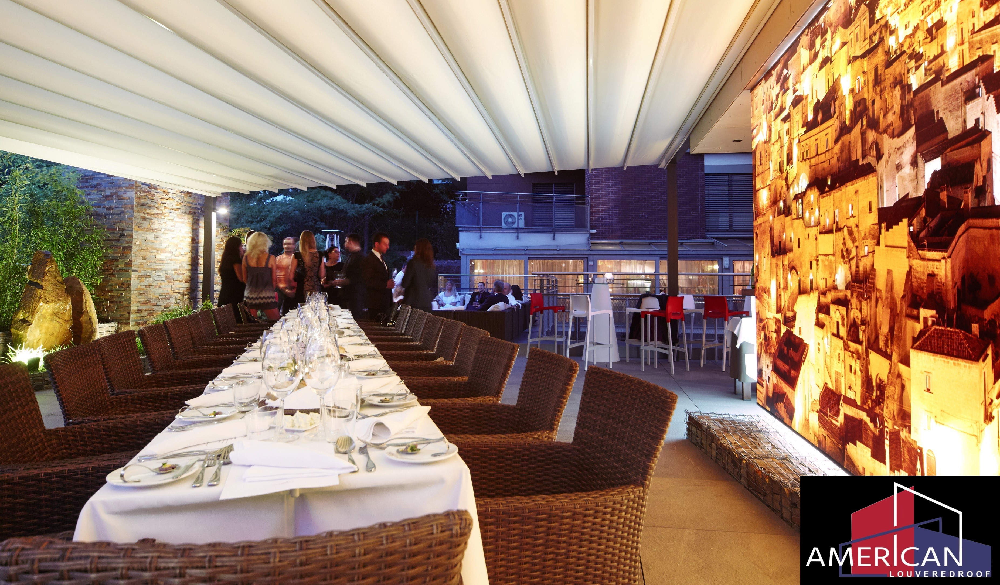
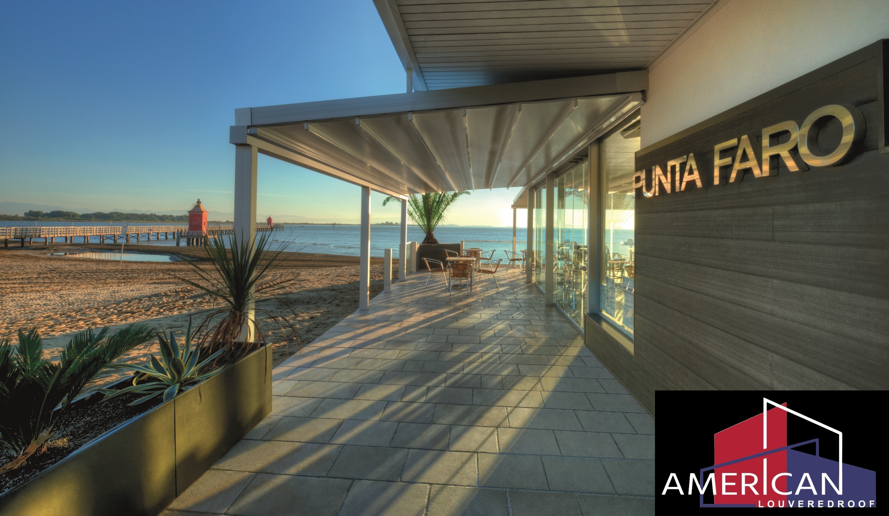
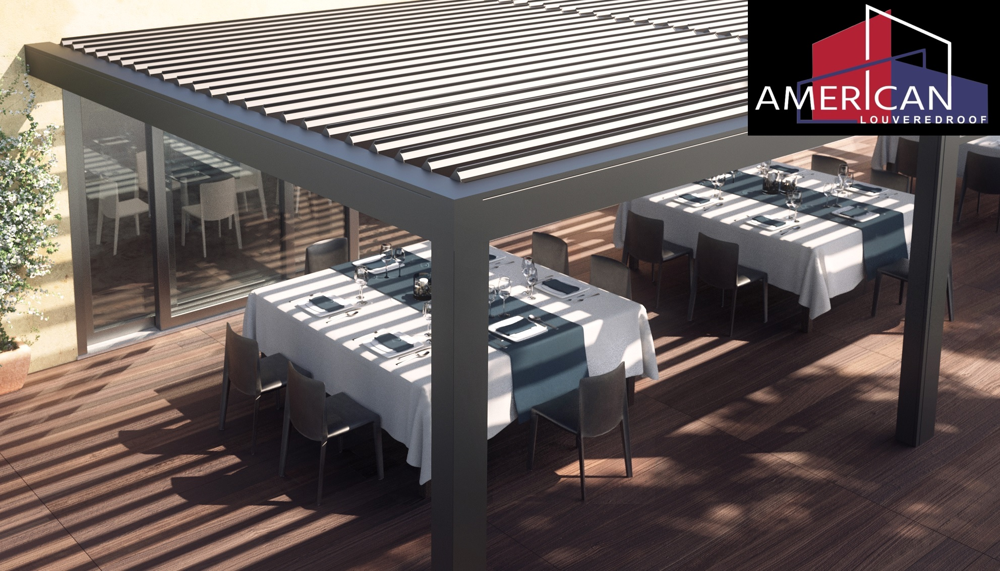

The Sunair® retractable fabric roof Pergola® Awnings are the ultimate in comfort for commercial outdoor spaces like restaurants, hotels and cafes. All our Pergola® retractable fabric roof awning models provide you with a unique level of control over nature. For restaurants and cafés, these awnings are quickly becoming fashionable. Protecting your guests and outdoor seating area during fierce mid-day sun and inclement weather keeps your patrons happy and comfortable. Being able to continue serving on the patio generates increased revenue even during inclement weather which is also good for the bottom line. They are designed for small to large spaces, freestanding or wall mounted and available in a number of innovative aluminum and wood designs. We invite you to discover how a custom made Pergola® awning from Sunair® can keep your patrons happy and comfortable, while increasing revenue which is also good for the bottom line.
 For restaurants and cafés, these awnings are quickly becoming fashionable. Protecting your guests and outdoor seating area during fierce mid-day sun and inclement weather keeps your patrons happy and comfortable. Being able to continue serving on the patio generates increased revenue even during inclement weather which is also good for the bottom line. Feel free to call us today and we can help you design the best system for you and show you how quickly the investment will pay off. Our "investment" calculator is an interactive excel file that we will be happy to share with you. If you can provide us with the number of tables, turnover, average restaurant check and profit margin numbers, we can show you how quickly the new pergola awning system will be paid off.
